← 返回阅读库 · 原论文目录
论文讲解阅读文档 · 机器人学 · v100
Contrastive Language, Action, and State Pre-training for Robot Learning
视频时长 00:06:15；讲解文字 3,418 字符；提取讲解画面 17 张。按视频原顺序阅读，每段文字保留时间戳。
文字来自整段视频的自动语音转写，按自然停顿分段，并与 PPT / 论文页面 / 演示画面对齐。未将讲解压缩为摘要；术语、数字和口述公式请结合画面及原论文核对。 阅读稿已校正规范部分明确术语误识别；原始逐字稿和每处修改记录另行保留。
讲解画面为源视频截图（640×360），不是可编辑 PPT 文件。全片按每秒 2 帧扫描内容变化，逐步展开页保留；连续动画保留代表画面。清晰度受源视频限制。
下载完整资料包 · 含离线 HTML、PDF、Word、全部 PPT 画面和字幕。
原论文与材料
Contrastive Language, Action, and State Pre-training for Robot Learning · 下载完整 PDF（7 页）
按时间阅读
00:00:00–00:00:15 · 画面 001
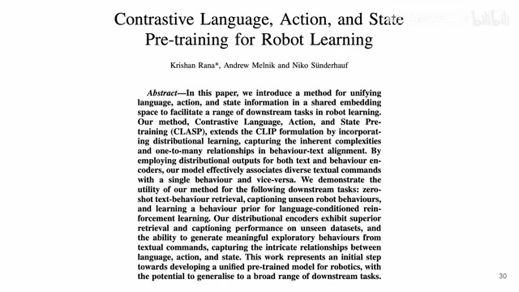
00:00:00–00:00:15 · 画面 001大家好,今天我们来快速数一篇论文 Contrastive Language, Action, and State Pre-training for Robot Learning。这一篇从各种意义上来讲都不是一个非常 solid 的工作，但是它提出的这个方向还是有点意思的。我们直接来看，我们首先一个快速回顾，clipclip 也是我们之前从来没有讲过，但是它的原理是非常简单的，就是我有一个 image 和它的 caption，就是 image 和 text pair。
00:00:15–00:00:40 · 画面 002
00:00:15–00:00:40 · 画面 002然后呢，我用一个 contrastive learning 的方法，就是我在一个 batch 里面，同样的 image 和 text，他们应该是相互靠近，不同的 image 和 text，他们应该相互远离，用这种 cosine similarity 来做，这样子呢，就把你的 text 和 image 共同投到了一个 latent space 里面，就相当于一个桥梁嘛，把 text 和 image 他们就联系起来了，那本文的核心的思路呢，就是我现在既然有 image 对吧，我把它替换成我们
00:00:40–00:00:41 · 画面 003
00:00:40–00:00:41 · 画面 00300:00:41–00:00:49 · 画面 004
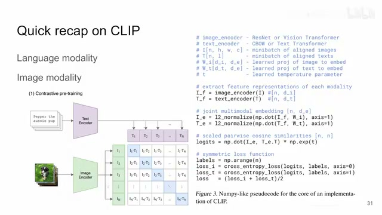
00:00:41–00:00:49 · 画面 00400:00:49–00:01:16 · 画面 005
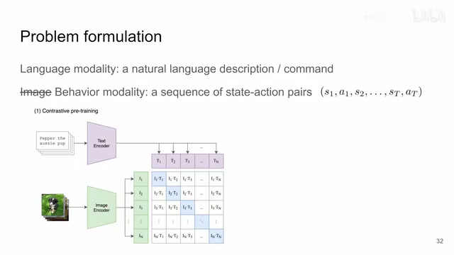
00:00:49–00:01:16 · 画面 005机器人里面 state action sequence，这里作者叫 behavior 把它来替换一下，然后同样的你跟 text 做 contrastive learning，是不是一样可行呢，那么这个就是作者的核心的思想，但是我觉得从他的没有汇报的实验当中来看，可能是不太可行的，那么首先这里和 clip 的区别就是我这里的 image embedding换成了这个 state action，那么在做了这个替换之后呢，language model 是可以保持不变的，作者呢用了一个 frozen 的 clip 加上了三层 MLP，把这个 text 做一个投影，那么 behavior 这个 action sequence 这块呢，它稍微有一点复杂，就是因为你这里有 state action，它是一个序列
00:01:16–00:01:44 · 画面 006
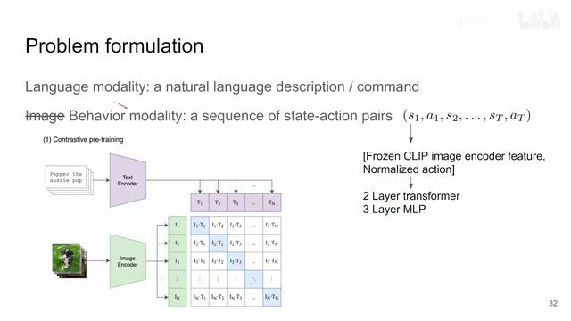
00:01:16–00:01:44 · 画面 006而这个 state 它是一个图像，所以这里作者用了一个 frozen clip image encoder，用它来图像中提取一个 feature，这个 feature 和 normalize 的 action 它们串在一起，这个就是相当于一个 token 了，你每一个时间的序列都有一个 token，然后这一串 token 再加一个 classification token 送到一个 transformer 里面，再送到一个 mlp 里面，这样子就提出了 behavioral feature
00:01:44–00:01:45 · 画面 007
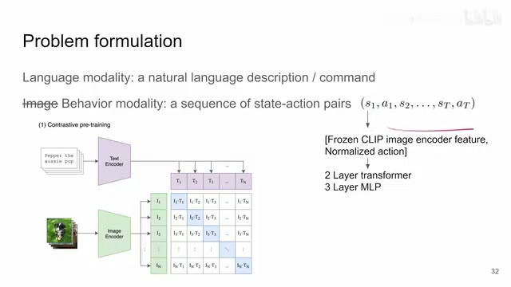
00:01:44–00:01:45 · 画面 00700:01:45–00:02:00 · 画面 008
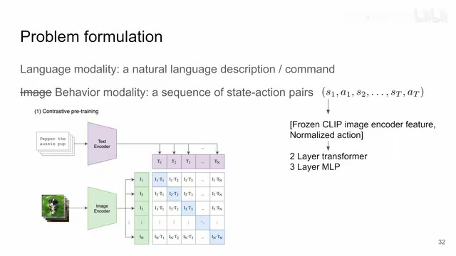
00:01:45–00:02:00 · 画面 008那么两个 encoder 有了之后呢，你就可以做 contrastive learning，这是最核心的东西，那具体使用的 loss 呢，跟这个标准的 clip 是一样的，只不过这里有一个区别，就是在 clip 里面呢，它这个 temperature 这个地方
00:02:00–00:02:04 · 画面 009
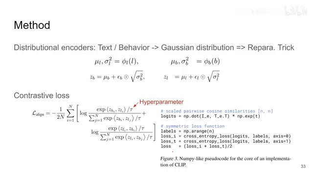
00:02:00–00:02:04 · 画面 00900:02:04–00:02:05 · 画面 010
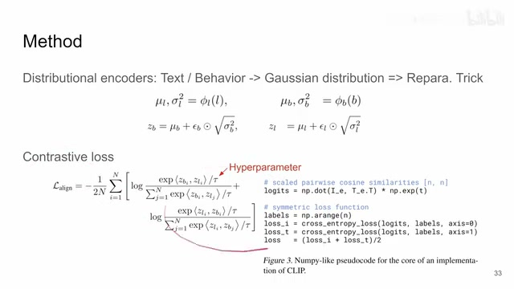
00:02:04–00:02:05 · 画面 01000:02:05–00:03:14 · 画面 011
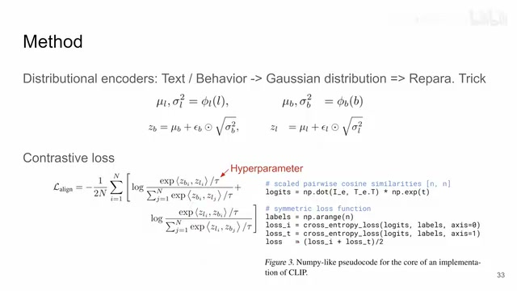
00:02:05–00:03:14 · 画面 011它是一个 learnable 的在本文中作者没有详细的说但是他说这是一个 hyperparameter既然是 hyperparameter它可能就是自己给定的一个值所以这是一个小的区别但是 loss 本身也是一样的这是它最核心的直接延伸 clip 的东西那么但是此外作者还针对它做了一点小的改动发现因为可能大概可能是因为直接这样做实在是效果不好那就是做了一个 distributional encoder那就是我们 encode 出来的结果它不再是一个 vector而是一个 gaussian distribution
那这就意味着我们是需要一个那这个就意味着我们预测的时候不止只预测出一个 vector 来我们要预测两个 vector一个是这个 gaussian 的均值另一个是它的均方差或者是标准差那应该是预测标准差会好一点那么有了这两个东西你从这个 gaussian distribution 里面采样采样出来的这个样本再作为 representation那这个东西在这个 variational inference 里面都是常规的操作了那么这个在理论上应该就是本文的核心了对吧但是呢我们看到作者
他并没有在这里停下他同时呢
00:03:14–00:04:13 · 画面 012
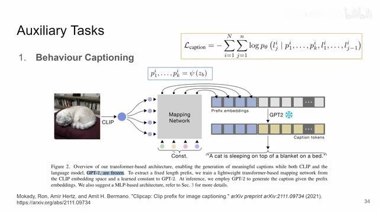
00:03:14–00:04:13 · 画面 012在已经有了这个 contrastive learning loss 的这个基础上他又提出了两个辅助的任务那么第一个就是这个叫做 behavior captioning就是根据这个 behavior来生成这个它对应的 text这个呢，他直接延续了这个 clipcap。这个文章的设计那你看到这个图就是你 clip 里面原来 clip 它是一张图像。
给一个 embedding那现在它就是一个 behavior。啊就是一个 state action sequence给一个 embedding那 embedding 之后呢它有一个 mapping network那么这里它的 mapping network 呢是一个八层的 attention那么完事之后呢，你就把这个 behavior 的 embedding 给它解码成一串的这个它叫 prefix embeddings，也就是一串 token。你把这一串 token 扔给一个 frozen 的 gpt2，让它去生成一些文本。那我们的监督信号呢，就是希望这个文本和这个 behavior 对应的实际的文本相对齐。那这个呢，是这个 behavior captioning。
本身你看也不是什么新鲜的东西。那么再往下的第二个辅助任务呢，叫做 behavior generation。那么这个时候呢，它是维持一个 policy。那么这个 policy 呢，会拿到你当前的 state，同时拿到你的这个 language embedding，然后呢，去看你生成的这个 action 是和真正的 ground truth action 它的 mse 是多少。所以它本质上是一个普通的 policy，但是 conditioned on 这个 language embedding，然后呢，做了一个 behavior cloning 的这么一个设置。
00:04:13–00:04:42 · 画面 013
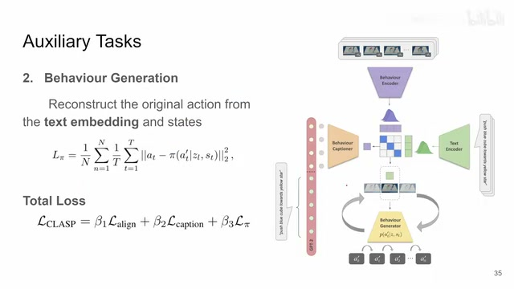
00:04:13–00:04:42 · 画面 013那最后呢，把两个辅助任务加上原本的这个 contrastive loss 一起加起来，那就是本文的总的 loss。那还是我要说，如果前面这个 contrastive 的部分它 work 的话，为什么还要加后面两个东西？那如果你加了后面两个东西，你的 evaluation 在哪里？所以这个问题还是蛮大的。我们来直接看到它实验吧，对吧？它用了数据集一个这个 language table。那配置就是这个配置，它有 text 有 simulator 有真实的环境，但是你就是这一个数据集吗？那作者做了什么任务呢？
00:04:42–00:04:43 · 画面 014
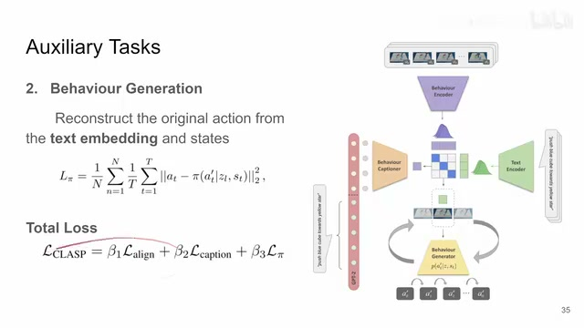
00:04:42–00:04:43 · 画面 01400:04:43–00:04:54 · 画面 015
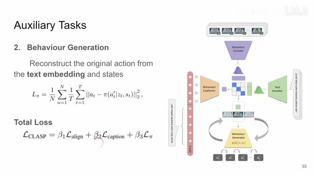
00:04:43–00:04:54 · 画面 01500:04:54–00:06:15 · 画面 016
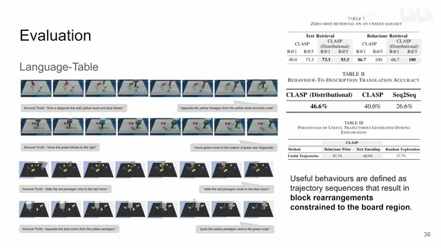
00:04:54–00:06:15 · 画面 016做了这个 ZeroShot Retrieval，你做 Clip 的常规操作。这个是它的结果。当然这种任务这种测试是有必要的，对于 Clip 这样的模型来说。第二个任务就是 Behaviour to Description，也就是我们之前的它的一个辅助任务 Behaviour Captioning。你看到跟什么比的 Sequence to Sequence。最后一个任务是 Behaviour Generation。按道理说你应该是生成一个好的 Policy 对吧？
至少是一个有用的东西。那这里呢，作者定义有用的 trajectory 是什么呢？那么这里作者说有用的 trajectory 是只要是你的这些图像里这些方块啊，它还在这个限定的这个板子的范围里面，那就是有用。那好吧，你还能再有用一点吗？对吧？那对比的 baseline 呢，是这个 random exploration。那对比的 baseline 呢，我们一看非常强大，是一个 random，然后呢，就就没有然后了。那因为文章到这里也就结束了，所以呢，我们应该怎么看待这个工作呢？对吧？
但是把 contrastive learning 引入到 policy learning 里面这个东西还是有悠久的传统的你像之前的 time-contrastive network，TCN，然后再到再稍微前一点的这个 CURL 做 reinforcement learning 的好的，那么以上就是我对这篇文章一个快速的喷，那么感谢您的收看，再见
00:06:15–00:06:15 · 画面 017
00:06:15–00:06:15 · 画面 017转写与来源说明 · 3 个自动复核提示
保留 68 个原始语音片段，3 个片段触发自动复核提示。提示仅用于定位可能的术语、重复或识别问题，不等于已确认错误。
讲解画面为源视频截图（640×360），不是可编辑 PPT 文件。全片按每秒 2 帧扫描内容变化，逐步展开页保留；连续动画保留代表画面。清晰度受源视频限制。
原视频：paper/合集_2026-10-16_机器人学/[论文简析]Contrastive Language, Action, and State Pre-training...[2304.10782].mp4
SHA-256：2ea1900453eeec9b8a354482ff201eb903bca85e03ccf1e7dbe1dbe2c408b33a
再作为 representation
就是一个 state action sequence
它有一个 mapping network
全文按视频语音与画面制作。原论文可从上方链接下载；完整资料包保留全文、原始逐字稿、字幕和校对记录。